Avatar360: Emulating 6-Dof Perception in 360° Panoramas through Avatar-Assisted Navigation Chalmers, Andrew and Zaman, Faisal and Rhee, Taehyun IEEE Conference on Virtual Reality and 3D User Interfaces, 2024
Neural Radiance Fields for Dynamic View Synthesis using Local Temporal Priors Chen, Rongsen and Zhao, Junhong and Zhang, Fang-Lue and Chalmers, Andrew and Rhee, Taehyun International Conference on Computational Visual Media, 2024
2023
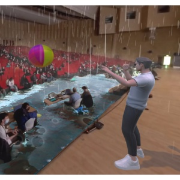
Real-Time Stage Modelling and Visual Effects for Live Performances Rhee, Taehyun and Chalmers, Andrew and Zaman, Faisal and Stangnes, Anna and Roberts, Vic ACM SIGGRAPH Real-Time Live!, 2023
Real-Time Auditorium Modeling and Visual Effects for Live Performances Chalmers, Andrew and Zaman, Faisal and Stangnes, Anna and Finnie, Simon and Nguyen, Hong Son and Han, JungHyun and Rhee, Taehyun ACM SIGGRAPH Asia Real-Time Live!, 2023
A Motion-Simulation Platform to Generate Synthetic Motion Data for Computer Vision Tasks Chalmers, Andrew and Zhao, Junhong and Khuan Hoh, Weng and Drown, James and Finnie, Simon and Yao, Richard and Lin, James and Wilmott, James and Dey, Arindam and Billinghurst, Mark and Rhee, Taehyun SIGGRAPH Asia Technical Communications, 2023
MRMAC: Mixed Reality Multi-User Asymmetric Collaboration Zaman, Faisal and Anslow, Craig and Chalmers, Andrew and Rhee, Taehyun IEEE International Symposium on Mixed and Augmented Reality, 2023
Deep Learning-Based Simulator Sickness Estimation from 3D Motion Zhao, Junhong and Tran, Kien TP and Chalmers, Andrew and Hoh, Weng Khuan and Yao, Richard and Dey, Arindam and Wilmott, James and Lin, James and Billinghurst, Mark and Lindeman, Robert W and Rhee, Taehyun IEEE International Symposium on Mixed and Augmented Reality, 2023
Simulating the Geometric Growth of the Marine Sponge Crella Incrustans O’Hagan, Joshua and Chalmers, Andrew and Rhee, Taehyun IEEE Visualization and Visual Analytics, 2023
De-Lighting Human Images using Region-Specific Data Augmentation Weir, Joshua and Zhao, Junhong and Chalmers, Andrew and Rhee, Taehyun 38th International Conference on Image and Vision Computing New Zealand, 2023
2022
Illumination Browser: An Intuitive Representation for Radiance Map Databases Chalmers, Andrew and Zickler, Todd and Rhee, Taehyun Computers & Graphics, 2022
Casual 6-Dof: Free-Viewpoint Panorama using a Handheld 360 Camera Chen, Rongsen and Zhang, Fang-Lue and Finnie, Simon and Chalmers, Andrew and Rhee, Taehyun IEEE Transactions on Visualization and Computer Graphics, 2022
Deep Portrait Delighting Weir, Joshua and Zhao, Junhong and Chalmers, Andrew and Rhee, Taehyun Proceedings of the European Conference on Computer Vision, 2022
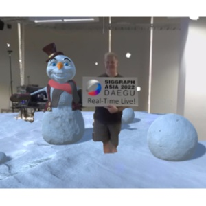
Teleport to the Augmented Real-World With Live Interactive Effects (IFX) Rhee, Taehyun and Chalmers, Andrew and Hoh, Weng Khuan and Roberts, Richard and Butcher, Warren and Finnie, Simon and Barrett, Rose Proceedings of the SIGGRAPH Asia Real-Time Live!, 2022
2021
Neural Screen Space Rendering of Direct Illumination Suppan, Christian and Chalmers, Andrew and Zhao, Junhong and Doronin, Alex and Rhee, Taehyun and Lee, SH and Zollmann, S and Okabe, M and Wu Pacific Graphics, 2021
Art-Directing Appearance using an Environment Map Latent Space Petikam, Lohit and Chalmers, Andrew and Anjyo, Ken and Rhee, Taehyun Pacific Graphics, 2021
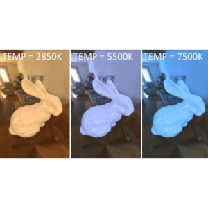
Adaptive Light Estimation using Dynamic Filtering for Diverse Lighting Conditions Zhao, Junhong and Chalmers, Andrew and Rhee, Taehyun IEEE Transactions on Visualization and Computer Graphics, 2021
Spectator View: Enabling Asymmetric Interaction Between HMD Wearers and Spectators With a Large Display Welsford-Ackroyd, Finn and Chalmers, Andrew and Kuffner dos Anjos, Rafael and Medeiros, Daniel and Kim, Hyejin and Rhee, Taehyun Proceedings of the ACM on Human-Computer Interaction, 2021
2020
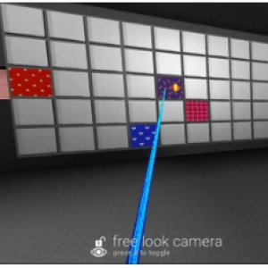
Asymmetric Interaction Between HMD Wearers and Spectators With a Large Display Welsford-Ackroyd, Finn and Chalmers, Andrew and dos Anjos, Rafael K and Medeiros, Daniel and Kim, Hyejin and Rhee, Taehyun IEEE Conference on Virtual Reality and 3D User Interfaces Abstracts and Workshops, 2020
Augmented Virtual Teleportation for High-Fidelity Telecollaboration Rhee, Taehyun and Thompson, Stephen and Medeiros, Daniel and Dos Anjos, Rafael and Chalmers, Andrew IEEE Transactions on Visualization and Computer Graphics, 2020
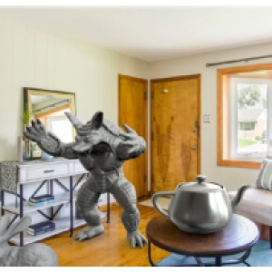
Reconstructing Reflection Maps using a Stacked-Cnn for Mixed Reality Rendering Chalmers, Andrew and Zhao, Junhong and Medeiros, Daniel and Rhee, Taehyun IEEE Transactions on Visualization and Computer Graphics, 2020
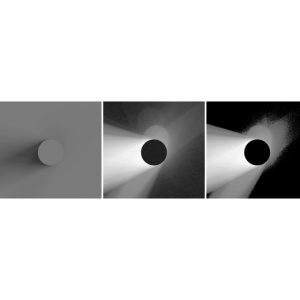
Shadow-Based Light Detection for HDR Environment Maps Chalmers, Andrew and Rhee, Taehyun 35th International Conference on Image and Vision Computing New Zealand, 2020
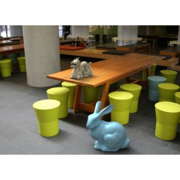
Illumination Space: A Feature Space for Radiance Maps Chalmers, Andrew and Zickler, Todd and Rhee, Taehyun Pacific Graphics, 2020
2019
Real-Time Underwater Caustics for Mixed Reality 360° Videos Thompson, Stephen and Chalmers, Andrew and Rhee, Taehyun IEEE Conference on Virtual Reality and 3D User Interfaces (Poster), 2019
Real-Time Mixed Reality Rendering for Underwater 360 Videos Thompson, Stephen and Chalmers, Andrew and Rhee, Taehyun IEEE International Symposium on Mixed and Augmented Reality, 2019
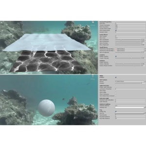
Underwater Toolkit: Mixed Reality Object Blending for 360° Videos Thompson, Stephen and Chalmers, Andrew and Medeiros, Daniel and Rhee, Taehyun IEEE International Symposium on Mixed and Augmented Reality, 2019
2018
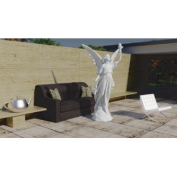
Visual Perception of Real World Depth Map Resolution for Mixed Reality Rendering Petikam, Lohit and Chalmers, Andrew and Rhee, Taeyhun IEEE Conference on Virtual Reality and 3D User Interfaces, 2018
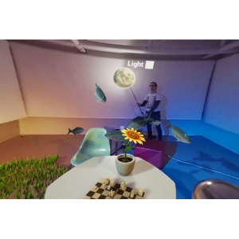
Mixed Reality 360 Live: Live Blending of Virtual Objects Into 360° Streamed Video Rhee, Taehyun and Chalmers, Andrew and Loh, Ian and Allen, Ben and Petikam, Lohit and Thompson, Stephen and Revill, Tom ACM SIGGRAPH Real-Time Live!, 2018
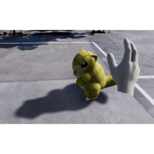
MR360 Interactive: Playing With Digital Creatures in 360 Videos Rhee, Taehyun and Chalmers, Andrew and Hicks, Matthew and Kumagai, Kazuki and Allen, Ben and Loh, Ian and Petikam, Lohit and Anjyo, Ken SIGGRAPH Asia Virtual & Augmented Reality, 2018
A Magic Wand for Motion Capture Editing and Edit Propagation Dean, Christopher J and Lewis, JP and Chalmers, Andrew SIGGRAPH Asia Technical Briefs, 2018
Illumination Space: A Feature Space for Radiance Maps Chalmers, Andrew Phd Thesis, 2018
2017
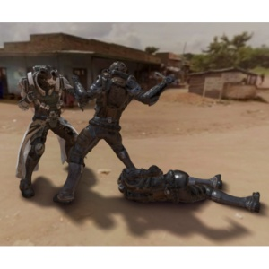
MR360: Mixed Reality Rendering for 360 Panoramic Videos Rhee, Taehyun and Petikam, Lohit and Allen, Benjamin and Chalmers, Andrew IEEE Transactions on Visualization and Computer Graphics, 2017
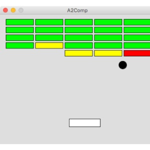
Designing a Computer Graphics Course for First Year Undergraduates Dodgson, Neil A and Chalmers, Andrew Eurographics, 2017
2015
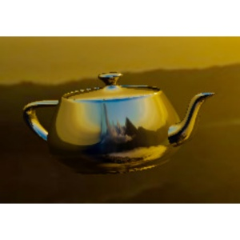
Synthesising Radiance Maps from Legacy Outdoor Photographs for Real-Time IBL on HMDs Ma, Wan-Duo Kurt and Iorns, Thomas and Chalmers, Andrew and Rhee, Taehyun International Conference on Image and Vision Computing New Zealand, 2015
2014
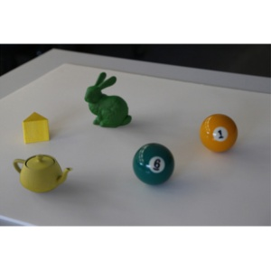
Perceptually Optimised Illumination for Seamless Composites Chalmers, Andrew and Choi, Jong Jin and Rhee, Taehyun Pacific Graphics, 2014
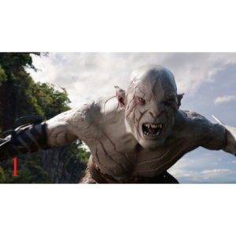
Sky Browser: Search for HDR Sky Maps Chalmers, Andrew and Lewis, John and Hillman, Peter and Tait, Charlie and Rhee, Taehyun Pacific Graphics, 2014
2013
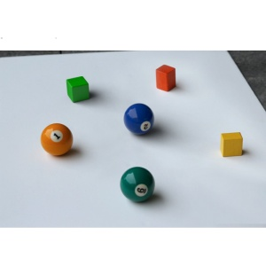
Perceptually Based Radiance Map for Realistic Composition Chalmers, Andrew and Choi, Jong Jin and Rhee, Taehyun 28th International Conference on Image and Vision Computing New Zealand, 2013